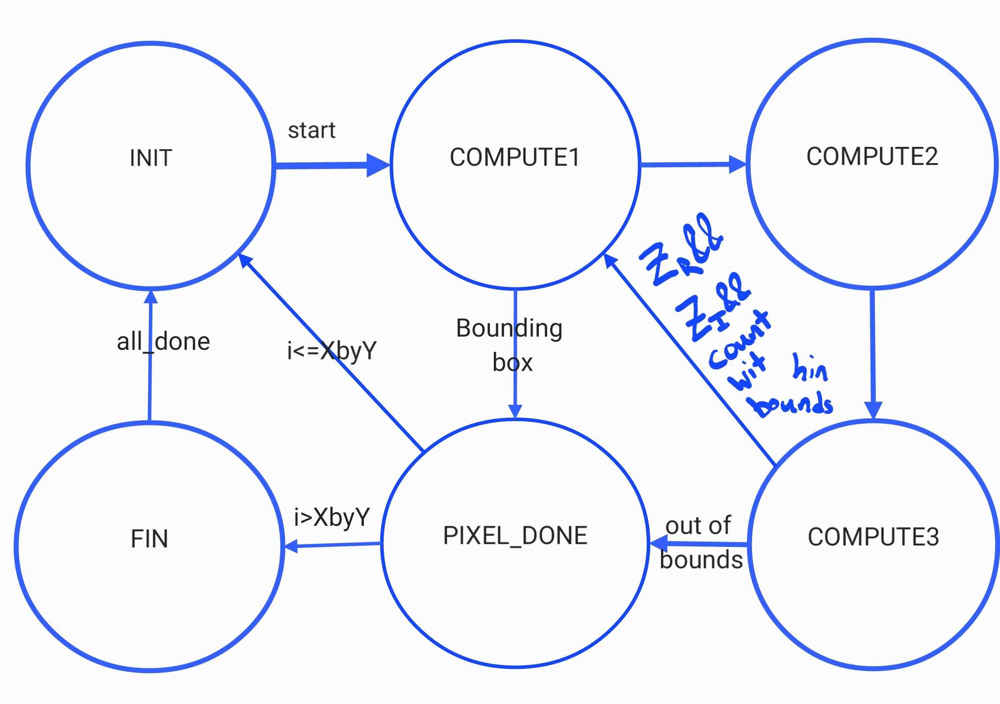

Hardware Design
Our original design instantiated three asynchronous, signed, fixed-point multiplier modules in every solver, which allowed the multiplications to be computed in the same cycle as some arithmetic, but caused each solver to use 5 multipliers in total, even though only three were needed. Two of the multipliers needed could be reused since they were in the COORD_MAP state shown in Figure 1, while the others were used in COMPUTE1 and COMPUTE2. The multipliers in COORD_MAP were multiplying two 27-bit numbers, but they were zero-padded, and Quartus optimized these multipliers down to 18x18 multipliers, meaning that each solver used 4 DSPs of the available 87, leaving us the possibility of instantiating 21 solvers at absolute maximum. Much of our logic relied on the number of solvers being a factor of 2, so we were limited to 16 solvers. Decreasing our DSP use to 3 would allow 29 solvers to be instantiated, and decreasing to 2 allowed upwards of 40 solvers, and would comfortably fit 32 so we could continue working with a factor of 2, so this is what we pursued. This change required additional pipelining in order to do all of the necessary computation, as shown in Figure 2, increasing the computation time of each solver but also allowing for increased parallelism.
Figure 1: FSM diagram for old solver computation logic
Figure 2: FSM diagram for improved Solver
The multipliers used in the COORD_MAP state initialized the axes of the Mandelbrot set corresponding to our zoom level and position, and stored them into two arrays, which was very space inefficient, since every solver stored these same values. Additionally inefficient, each solver computed every value along the x-axis, but only used 1&fraslN (N is number of solvers) entries of this array. These arrays were also eating up our storage and preventing us from fitting more iterators onto the FPGA. We realized that these values did not need to be precomputed before starting our new update, and could instead be computed in our INIT state every time we moved on to a new pixel. This removed the need for the COORD_MAP state, freed up a substantial amount of memory, and removed unnecessary computation.
The first computation state, COMPUTE1, checks to see if the pixel is inside of either bounding box (an optimization we will talk about later), and sets the count to the maximum count if it is, and performs the arithmetic operations necessary before the multiplication can be performed. The squares of the real and imaginary components are computed by multiplication in COMPUTE2, then assigned back down to the correct bit-width asynchronously. In COMPUTE3, the product of the real and imaginary values is computed, which is okay since it is not used until we are back in COMPUTE1. This allows us to only use two multipliers and instantiate substantially more schedulers without building multipliers out of other logic.
With a significant increase in the number of solvers, there was also increased contention in our arbiter, since only one solver could write to memory per cycle. Removing this contention was our next goal. We accomplished it by using a custom VGA driver, provided by Hunter Adams, and instantiating M10K memory inside of each solver, so that no synchronization would be required between solvers. The VGA driver, running at 25 MHz, requested the next pixel value it was going to read one cycle ahead of time, giving us four cycles to respond with our solvers running at 100 MHz. In order to avoid the issue of a sparse array like we had in our x-axis pre-computation, each solver maintained a separate counter for the number of pixels it had solved, and wrote to its individual memory sequentially. This simplified logic inside each solver but required some computation in our scheduler in order to return the correct pixel value requested by the VGA, provided in x and y coordinates. This required another multiplier to convert from 2-dimensional to 1-dimensional addressing, as well as a division by the number of solvers to access the correct bin of each multiplier. When N was a factor of two this could be accomplished by a simple right shift by log(N), but had to be changed to a division when N was increased beyond a factor of 2. This computation would produce the same value for N pixels, allowing the read address sent to every solver to stay stable for many cycles, but a scheme for choosing which solver's memory to send to the VGA driver was still required. This was accomplished by creating a look-up table containing the modulus of the range of possible x-coordinates (0-639) and N, then indexing this table with the requested x-coordinate. We believe that memory was the bottleneck for our maximum computation frequency.
Instantiating the PLL to drive our solvers faster was done with QSYS and required little logic but was unsuccessful at first. After a thorough inspection of our code, we realized this was because we had flipped the connections of the locked indicator of the PLL and the clock output. After fixing this mistake, we were able to run our design at 100 MHz with no issues. Increasing above 100 MHz, we started seeing visual inconsistencies vertically striped along the screen at even intervals, suggesting something was going wrong every time the x-coordinate corresponded to a particular solver ID. We believe this may have been due to the read address calculation not finishing within a clock cycle, causing the wrong address to be accessed every time it should have been incremented by one, but stabilized by the time the rest of the iterators accessed the address.
The interesting portions of the Mandelbrot set to render are the edges, where the number of iterations to diverge varies greatly, creating beautiful patterns. Deep inside the set, however, in the first and second bulb, the values will never diverge, and direct computation is not strictly necessary within certain bounds. As a further optimization, we created two bounding boxes inside the two largest bulbs (Figure 3). We determined the appropriate bounds by drawing the Mandelbrot set in MATLAB using code from Bruce Land and inspecting the graph drawn there. A check is done in the first compute state to check the coordinates against the complex plane, and will automatically set them to 1000 (the maximum number of iterations), saving the most expensive computations.

Figure 3: Bounding boxes, shown in green, applied to speed up computation time